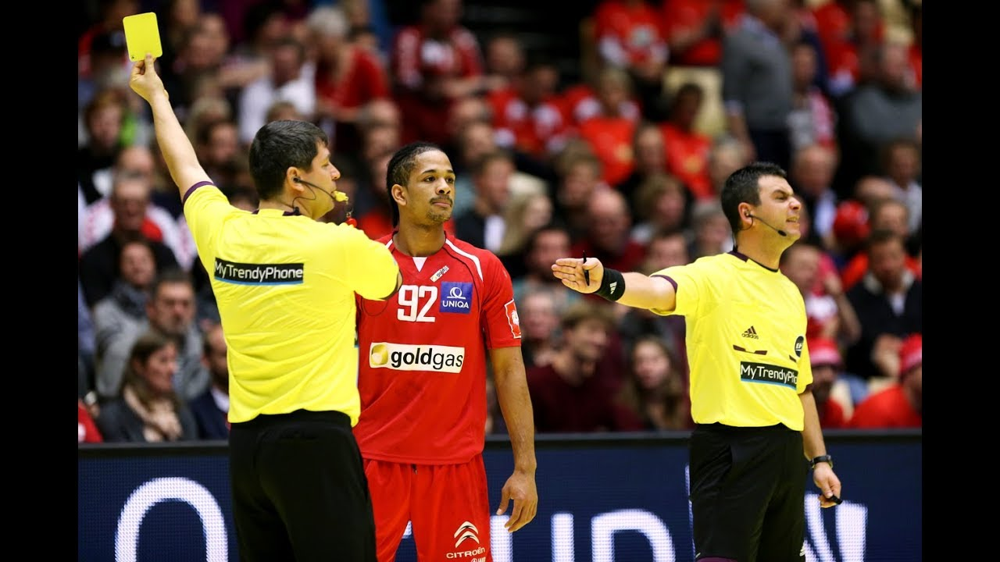
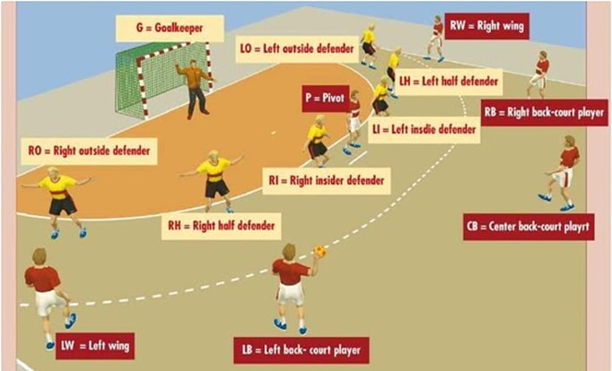
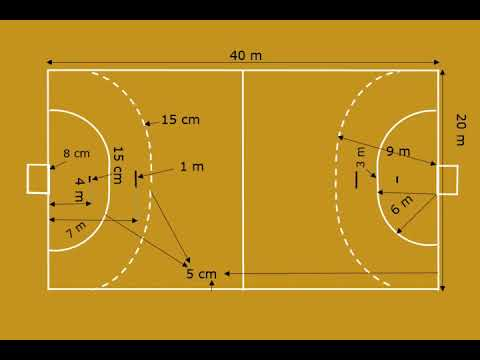

Pravila rukometne igre
Rukomet je igra koja se igra šezdeset minuta, dva poluvremena po
30 minuta. Pobjeđuje ona ekipa koja postigne jedan pogodak više od
protivnika. Ako je rezultat neriješen, a mora se dobiti pobjednik
susreta, tada se igraju dva produžetka nakon odmora od pet minuta.
Odmor između produžetaka je jedna minuta. Ostane li i tada
neriješen rezultat, pobjednik se odlučuje izvođenjem sedmeraca.
Igrači rukom dodiruju loptu i međusobno si dodaju loptu te upućuju
šut prema protivničkom golu. Svaki igrač smije napraviti do tri
koraka držeći loptu u ruci, a za svaki slijedeći korak vodi loptu
odbijajući je od poda, ili je jednostavno mora dodati svom
suigraču. Loptu može držati najviše tri sekunde.
Kretanje igrača je slobodno po cijelom terenu osim u prostoru 6 m ispred gola. Vratar je jedini igrač koji smije stajati u tom prostoru. Ostali igrači smiju iznad prostora od 6 m loptu pokušati uhvatiti ili dodati samo u skoku odnosno za vrijeme leta.
Pravila igre
Kretanje igrača je slobodno po cijelom terenu osim u prostoru 6 m ispred gola. Vratar je jedini igrač koji smije stajati u tom prostoru. Ostali igrači smiju iznad prostora od 6 m loptu pokušati uhvatiti ili dodati samo u skoku odnosno za vrijeme leta.
Pravila igre

Rukomet ima dvije faze igre a to su faza napada i faza obrane.
Igrači najčešće u fazi napada koriste formaciju s lijevim i desnim
krilom, lijevim, srednjim i desnim vanjskim i pivotom ili centrom.
Nekoliko mogućnosti postoji u obrani a koje označavaju način
postavljanja odnosno formacije obrambenih igrača ispred svog
šesterca. Stoga se koristi obrana 6-0 (šesti igrača u ravnini
ispred crte od 6 m), zatim 5-1 (pet igrača u liniji te jedan
ispred njih koji pokušava ometati protivničkog organizatora igre),
zatim 4-2 te nešto manje koristi se i formacija 3-2-1.
Obrambeni igrači imaju pravo do određene mjere ometati protivničke napadače u pokušaju dodavanja lopte i sprečavaju protivnika u šutiranju na gol. Svaka gruba igra i nepropisni udarci sankcioniraju se prekršajem.
Na početku utakmice početno bacanje izvodi ekipa koja je dobila ždrijeb i izabrala loptu.
Obrambeni igrači imaju pravo do određene mjere ometati protivničke napadače u pokušaju dodavanja lopte i sprečavaju protivnika u šutiranju na gol. Svaka gruba igra i nepropisni udarci sankcioniraju se prekršajem.
Na početku utakmice početno bacanje izvodi ekipa koja je dobila ždrijeb i izabrala loptu.

Rukomet se igra na terenu pravokutnog oblika dužine 40 metara i širine 20 metara. Do sada je teren najčešće bio prekriven parketom ali se sve više upotrebljavaju umjetni materijali od tvrde gume. Teren na posljednjem Svjetskom prvenstvu u rukometu bio je od pjenaste podloge koji se zove taraflex a koji apsorbira 43% udara od skoka ili trčanja. Samim time i igrači osjećaju manju bol prilikom pada na tu podlogu nego kad padnu na drveni parket.
Što se tiče vanjskih terena oni su uglavnom od asfalta i betona pa se ne koriste za službena natjecanja većeg ranga jer postoji mogućnost od padova i ozljeda igrača.
Teren čine polja za igru i dva prostora za vratare. Uzdužne crte nazivaju se duže granične crte dok se kraće zovu crte vrata (između vratnica) i širine je 8 centimetara. Sve ostale crte su širine 5 centimetara. Sigurnosni pojas oko igrališta mora biti širine najmanje jedan metar duž uzdužnih crta i dva metra
